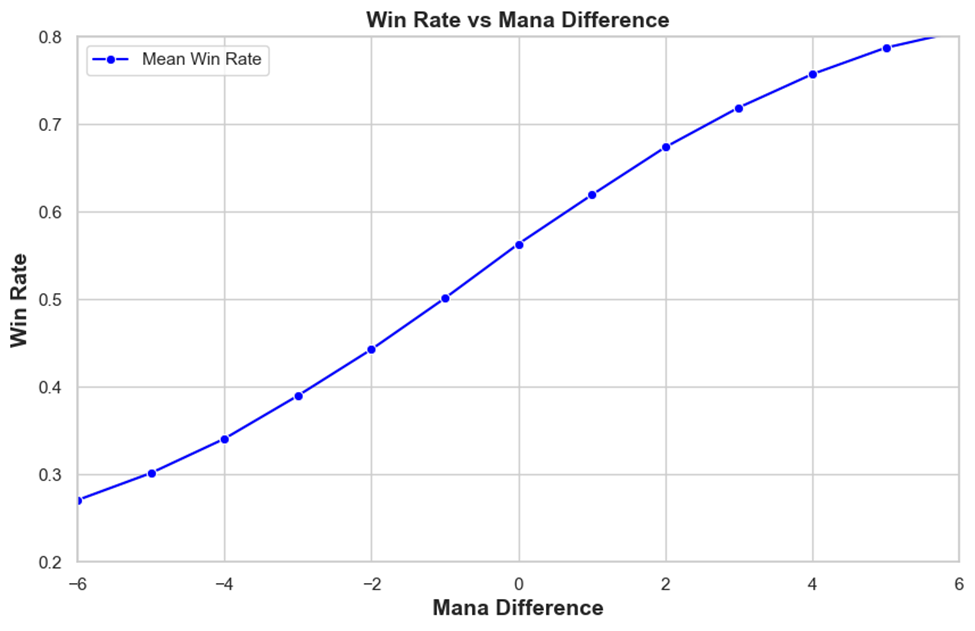
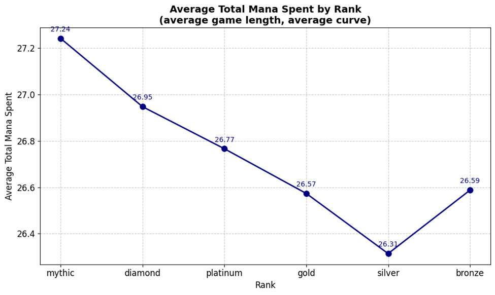
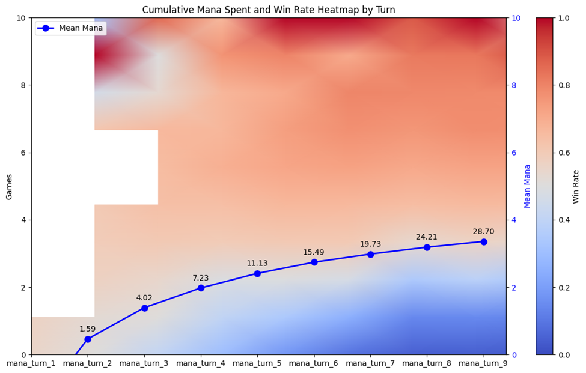

Introduction
In the Limited format of Magic: The Gathering, effective mana utilization—spending the most mana possible each turn—is closely linked to winning. Our analysis of 4.7 million games reveals a strong linear correlation between mana differential and win rate, highlighting the importance of mana efficiency in competitive play.
Graph Analysis
The graph above demonstrates that games with higher mana differentials between players generally have better win rates. Despite some non-linearity, the data shows a strong trend, with an R-squared value of 0.99. This analysis excludes the final turn of the game to account for the advantage of the first player having an additional turn to spend mana.
Mana Spending by Player Rank
Our investigation into mana spending by player rank reveals a clear pattern: higher-ranked players consistently spend more mana per turn, even when accounting for game length and mana curve. This suggests that higher-level players actively choose to spend more mana, optimizing their gameplay for better efficiency.
Turn-by-Turn Efficiency
This heatmap illustrates how mana spending correlates with win rates across all turns of the game. By examining mana usage on each turn, we observe that increased mana expenditure is associated with higher win rates, even if the game does not end on that turn. The central line graph shows the average mana spent per turn, with shaded regions indicating win rates corresponding to mana spent. Deviations from the mean mana spent are linked with fluctuations in win rates, reinforcing the importance of mana efficiency throughout the game.
Strategic Insights
Our analysis highlights that players who spend more mana on average per turn tend to have higher win rates. This trend is particularly evident among higher-level players who consistently outspend their opponents, even when controlling for factors like mana curve and card quality. Strategic optimization of mana usage is crucial for improving win rates and achieving success in Magic: The Gathering.